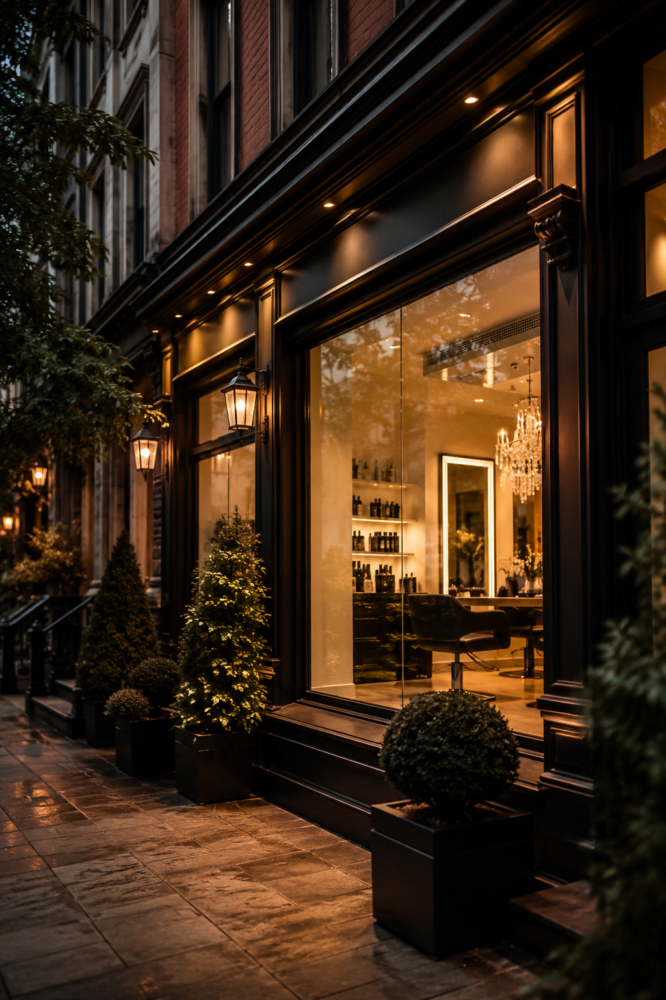

Premium kuaför ve beauty studio sistemi
Sadece şık site değil, çalışan bir randevu sistemi.
Bu demo; müşteri tarafında rezervasyon talebi alır, admin tarafında onaylar, gün akışını gösterir ve müşteri takibini tek panelde toplar.
12
bugünkü randevu
3
onay bekleyen
48
müşteri kartı
Bugün
Operasyon özeti
Ece Demir
Renk + bakım
11:30
Selin Akın
Kesim + fön
13:00
Zeynep K.
Onay bekliyor
16:30
Neden tercih edilir
İşletme sahibine sadece vitrin değil, kontrol hissi satarsın.
Randevu talebi toplar
Müşteri formdan talep bırakır, işletme telefonda kaybolmadan düzenli liste görür.
Onay akışı sunar
Talep önce bekleyen kutusuna düşer, sonra admin panelinden onaylanır veya reddedilir.
Müşteri kartı tutar
Son ziyaret, tercih edilen işlem, notlar ve geri dönüş potansiyeli tek yerde kalır.
Günlük akışı gösterir
Bugünkü saatler, yoğunluk ve bekleyen işler işletme sahibi için okunaklı görünür.
Müşteri tarafı demo
Buradan oluşturulan talep admin paneline düşer.
Bu alan işletmeye gösterirken en kritik nokta: “Müşteri form bırakıyor, siz panelden onaylıyorsunuz.” Yani sadece iletişim değil, süreç hissi var.
Hızlı kurulum
Salon adına, hizmetlerine ve çalışma saatlerine göre 1-2 günde uyarlanabilir.
Satılabilir paket
Site + admin panel + WhatsApp entegrasyonu diye ürünleştirilebilir.
Operasyon görünümü
İşletme sahibinin “bunu kullanırım” diyeceği ekranlar.
Onay bekleyenler
Talep kuyruğu
Bugünkü akış
Gün programı
Müşteri kartları